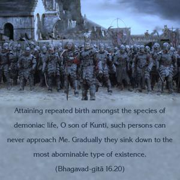

Attaining repeated birth amongst the species of demoniac life, O son of Kuntī, such persons can never approach Me. Gradually they sink down to the most abominable type of existence.

It is known that God is all-merciful, but here we find that God is never merciful to the demoniac. It is clearly stated that the demoniac people, life after life, are put into the wombs of similar demons, and, not achieving the mercy of the Supreme Lord, they go down and down, so that at last they achieve bodies like those of cats, dogs and hogs. It is clearly stated that such demons have practically no chance of receiving the mercy of God at any stage of later life. In the Vedas also it is stated that such persons gradually sink to become dogs and hogs. It may be then argued in this connection that God should not be advertised as all-merciful if He is not merciful to such demons. In answer to this question, in the Vedānta-sūtra we find that the Supreme Lord has no hatred for anyone. The placing of the asuras, the demons, in the lowest status of life is simply another feature of His mercy. Sometimes the asuras are killed by the Supreme Lord, but this killing is also good for them, for in Vedic literature we find that anyone who is killed by the Supreme Lord becomes liberated. There are instances in history of many asuras – Rāvaṇa, Kaṁsa, Hiraṇyakaśipu – to whom the Lord appeared in various incarnations just to kill them. Therefore God’s mercy is shown to the asuras if they are fortunate enough to be killed by Him.